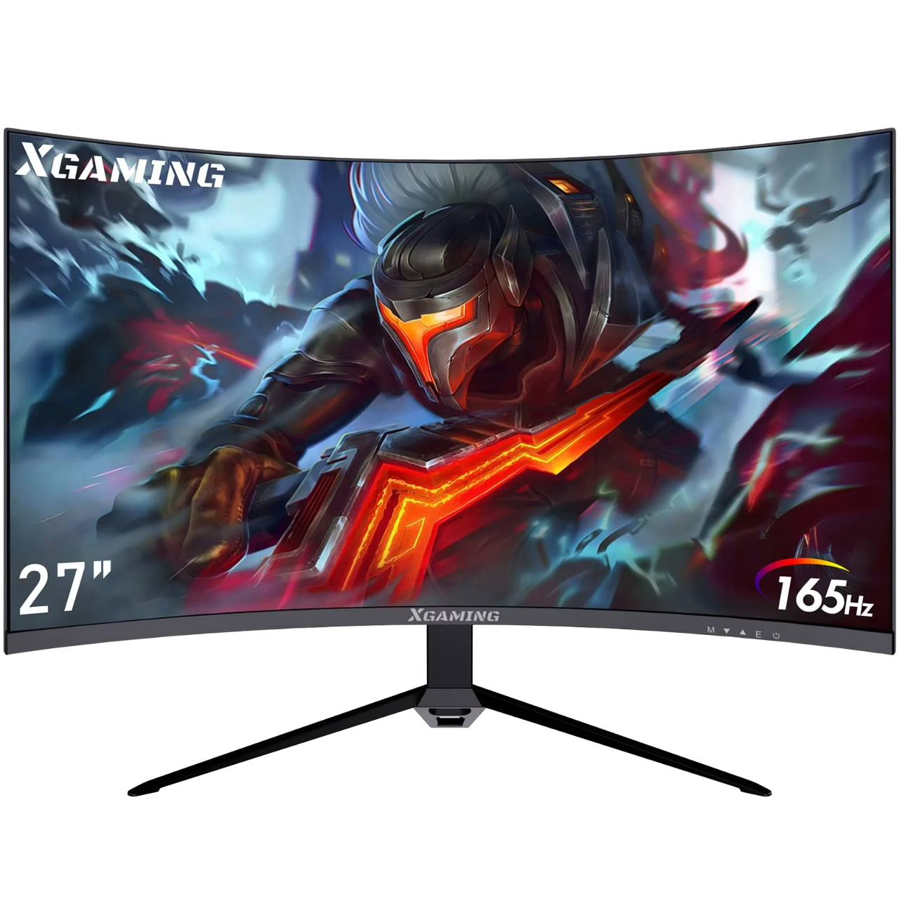

Welcome to Cool Monitors! We offer a diverse selection of high-quality monitors for every need and budget. From casual use to gaming and professional needs, our range features cutting-edge echnology like ultra- high-definition displays and fast refresh rates. Our knowledgeable staff is here to help you find the perfect monitor to elevate your computing experience. Visit Cool Monitors today and discover your ideal display solution!

Introducing the XGaming 27" Gaming Monitor, designed for ultimate gaming performance. With a
blazing-fast 165Hz refresh rate, every frame is delivered with precision and clarity, ensuring
smooth gameplay like never before. Immerse yourself in stunning visuals on the expansive 27-inch
display, which brings your favorite games to life with vibrant colors and crisp detail. Experience
the thrill of gaming like never before with the XGaming 27" Gaming Monitor.
At Cool Monitors, we also offer Work Monitors designed for productivity and comfort.
With features like adjustable stands and blue light filters, our monitors enhance your
work environment while prioritizing eye safety during extended use.